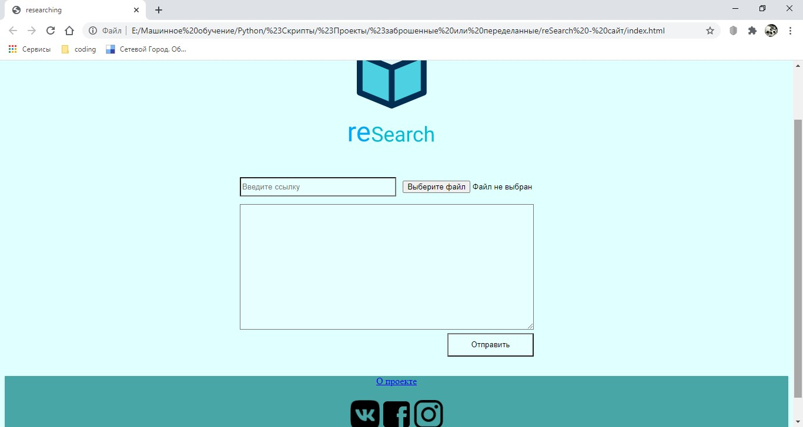

ReSearch
Добрый день!
Я Серафим(ityas_woker) - мальчик из России и по совместительству - единственный разработчик этого ресурса и репозитория(хотя, может быть это только сейчас так). На момент написания этой статьи мне 16 лет.
История создания и идея
Весной 2020 года(на момент карантина), в мае вроде, я писал проекты, что бы набраться опыта в языке программирования python. Я дописывал один из проектов и думал - а что писать дальше? И однажды мне пришла идея сделать сайт, который будет проверять ссылки и файлы, отправленные пользователем, и находить в них введенные регулярные выражения. Идея была интересной, но у меня не хватило опыта завершить начатое. И мне пришлось его закрыть. Когда я решил заканчивать разработку сайта было две версии интерфейса.
Название
Я очень долго думал над названием и через какое-то время я решил оставить название сайта - ReSearch. Весь сок названия был в игре слов. "Search" - искать, а "re" - модуль python, с помощью которого я хотел реализовать поиск. А вместе они дают слово "исследовать". Мой сайт как раз этим и занимался! Он исследовал файлы и другие сайты и выводил найденные совпадения. И я не хотел забрасывать эту прекрасную идею, тем более, что основа для парсинга была готова.
Рождение репозитория
Так появился мой репозиторий. Я взял эту основу(т.е готовые .csv .txt .pdf и .docx) и перенес в другую папку, дописал и протестировал все, а затем еще дописал. А после стал писать сайт с документацией(как раз тот ресурс, на котором вы находитесь).
Больше всего трудностей я испытывал с расширением docx. Я потратил часов 8, прежде чем нашел нужные библиотеки и "куски помощи (небольшие, но работающие куски кода)". Самым первым ответом был pydocx. Но оно просто не работало. Я так до сих пор не понял, что же там было не так. Использовал и другие билиотеки, но они или были заброшенны, или не поддерживались на конкретных ОС. Много было проблем. Очень много. Это расширение мне почти кровью далось(впринципе, я серьезно). Но я написал и горжусь этим.